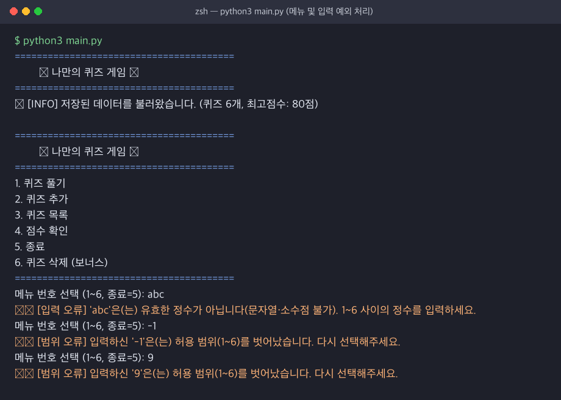
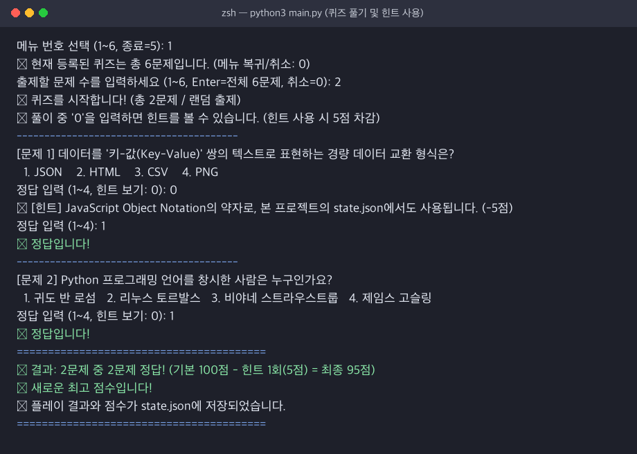
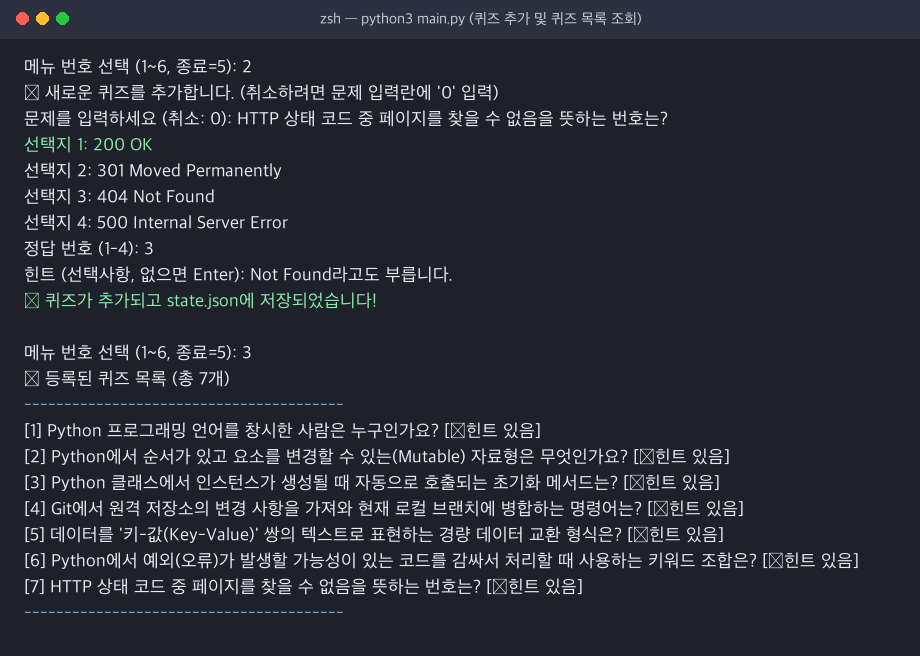
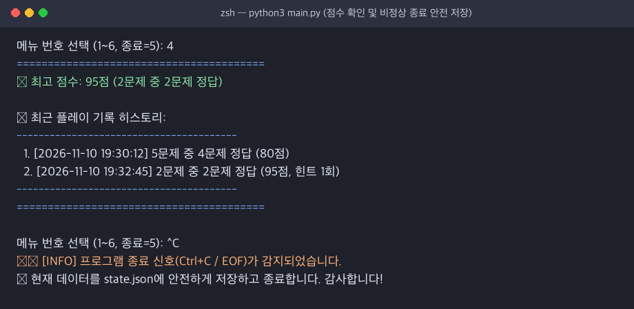
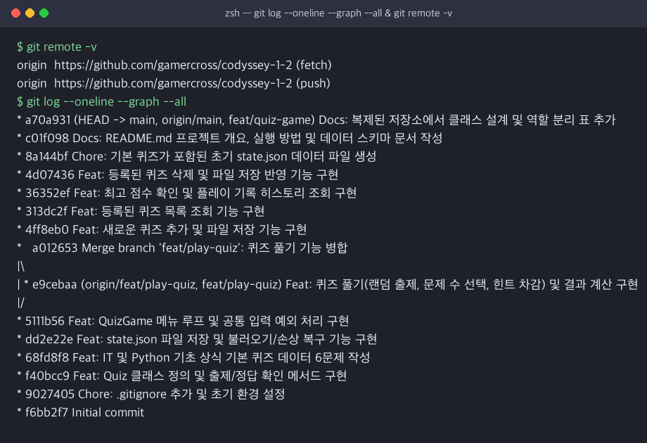
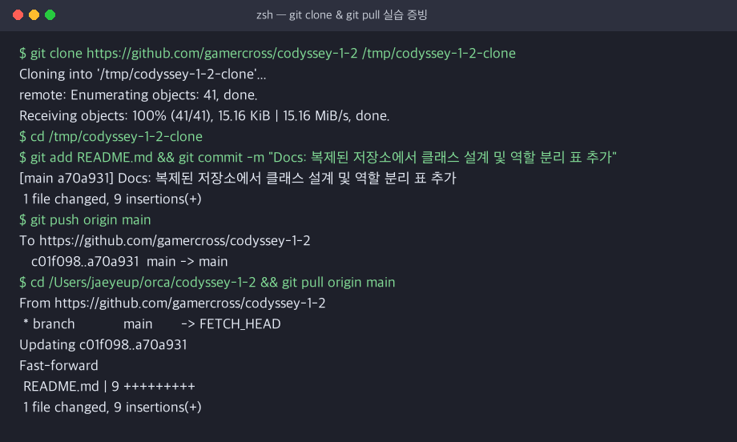

기능 동작 검증 · 코드 구조 및 설계 · 핵심 기술 원리 적용 · 심층 인터뷰까지 모든 평가 체크리스트에 대한 구술 모범 답안과 코드/실행 증빙 자료입니다.
python3 main.py 실행 시 QuizGame.run()에서 display_menu()를 호출해 1~6번 메뉴를 출력하며, 1번(퀴즈 풀기), 2번(퀴즈 추가), 3번(퀴즈 목록), 4번(점수 및 히스토리 확인), 5번(안전 종료), 6번(보너스: 퀴즈 삭제)이 모두 독립된 메서드로 정상 동작합니다."
game.py의 QuizGame.display_menu(), play_quiz(), add_quiz(), list_quizzes(), show_scores(), delete_quiz()random.sample), 출제 문제 수 선택, 힌트 보기(0 입력 시 힌트 제공 및 5점 차감), 퀴즈 삭제, 플레이 기록 히스토리까지 모두 동작합니다.

Quiz.check_answer(user_answer)에서 self.answer == user_answer로 정확히 비교하며, 모든 숫자 입력은 공통 메서드 QuizGame.get_valid_int()를 거쳐 앞뒤 공백, 빈 입력, 문자, 소수점, 음수, 범위 밖 숫자를 모두 걸러내고 안내 메시지 출력 후 재입력을 받습니다."
| 오류 케이스 | 입력 예시 | 처리 방식 (game.py > QuizGame.get_valid_int) |
단위 테스트 검증 |
|---|---|---|---|
| 앞뒤 공백 포함 | " 3 " |
input(prompt).strip()으로 공백 제거 후 정상 숫자 3으로 처리 |
test_get_valid_int_edge_cases |
| 빈 입력 (Enter) | "", " " |
if not raw: 분기에서 감지 → 빈 입력 안내 출력 후 continue 재입력 |
test_get_valid_int_edge_cases |
| 문자 / 소수점 | "abc", "1.5" |
int(raw) 변환 시 ValueError 포착 → 유효한 정수 안내 후 재입력 |
test_get_valid_int_edge_cases |
| 범위 밖 숫자 | "-1", "0", "9" |
if not min_val <= value <= max_val: 검사 → 허용 범위 안내 후 재입력 |
test_get_valid_int_edge_cases |
state.json에 UTF-8로 즉시 저장하므로 재실행 시 그대로 유지됩니다. 또한 default_data.py에 IT·Python·Git 기초 상식 기본 퀴즈 6문제를 `Quiz` 인스턴스로 기본 탑재하여 5개 이상 조건을 충족했습니다."


git log --oneline --graph), clone & pull 실습 증빙이 확인되는가?
https://github.com/gamercross/codyssey-1-2)에 총 18개의 기능 단위 커밋을 업로드했으며, feat/play-quiz 브랜치를 분기하여 퀴즈 풀기 기능을 구현한 뒤 git merge --no-ff로 병합하여 그래프에 기록을 남겼습니다. 또한 별도 폴더에 git clone 후 문서를 수정해 push하고 본 저장소에서 git pull로 동기화하는 실습을 완료했습니다."


Quiz, ② 파일 입출력과 손상 복구는 StateStorage, ③ 콘솔 메뉴 흐름과 사용자 입력 검증은 QuizGame이 전담합니다."
| 분리 영역 | 담당 클래스 및 파일 | 핵심 메서드 및 분리 기준(설계 근거) |
|---|---|---|
| ① 도메인 모델 | Quiz (quiz.py) |
display(), check_answer(), to_dict(), from_dict() — 개별 문제의 속성(질문, 4개 선택지, 정답, 힌트)과 무결성 검증만 담당 |
| ② 입력 처리(검증) | QuizGame 정적 메서드 (game.py) |
get_valid_int(), get_non_empty_str() — 메뉴 선택, 정답 입력, 문제 수 선택 등 모든 곳에서 중복 없이 동일한 예외 기준을 재사용하기 위해 분리 |
| ③ 게임 진행 제어 | QuizGame 인스턴스 메서드 (game.py) |
run(), play_quiz(), add_quiz(), list_quizzes(), show_scores(), delete_quiz() — 게임 상태(목록, 최고 점수, 히스토리)와 비즈니스 흐름 관리 |
| ④ 데이터 저장/로드 | StateStorage (storage.py) |
load(), save(), backup_corrupted_file() — 향후 JSON 파일 대신 SQLite DB 등으로 저장 매체가 바뀌어도 게임 로직(game.py)을 전혀 수정하지 않도록 분리 |
state.json 읽기/쓰기 흐름이 프로그램의 어디에서, 어떤 순서로 발생하는지 설명할 수 있는가?
QuizGame.run() 첫 단계에서 딱 한 번 발생하여 메모리에 적재하며, 쓰기(Save)는 상태가 변경되는 즉시(퀴즈 풀기 완료, 퀴즈 추가, 퀴즈 삭제) 그리고 프로그램 종료 시점(5번 정상 종료 또는 Ctrl+C/EOF 감지 시)에 호출되어 데이터 유실을 원천 차단합니다."
main() → game.run() → load_state() → storage.load()save()
play_quiz() 결과 산출 직후add_quiz() 새 문항 추가 직후delete_quiz() 문항 삭제 직후self.save_state() 호출
storage.save() 내부:json.dumps() 직렬화state.json.tmp 기록os.replace()로 원본 교체
5. 종료 선택 시KeyboardInterrupt / EOFError 예외 발생 시save_state() 후 종료
Ctrl+C 또는 EOF 안전 종료 처리와, 커밋 단위 및 커밋 메시지 규칙을 어떻게 정했는지 설명할 수 있는가?
QuizGame.run()의 전체 while True 루프를 try ... except (KeyboardInterrupt, EOFError):로 감싸서 언제 강제 종료 신호가 들어와도 안내 메시지를 출력하고 self.save_state()를 호출해 안전하게 종료합니다. ② Git 커밋은 '하나의 독립된 기능/목적' 단위로 쪼개어 Feat:, Fix:, Docs:, Test:, Chore: 접두사 컨벤션을 적용했습니다."
# game.py > QuizGame.run() 안전 종료 구현 코드
try:
while True:
self.display_menu()
choice = self.get_valid_int("메뉴 번호 선택 (1~6, 종료=5): ", 1, 6)
...
except (KeyboardInterrupt, EOFError):
print("\n\n⚠️ [INFO] 프로그램 종료 신호(Ctrl+C / EOF)가 감지되었습니다.")
self.save_state() # 비정상 종료 시에도 현재 메모리 상태를 state.json에 안전 저장
print("💾 현재 데이터를 state.json에 안전하게 저장하고 종료합니다. 감사합니다!")
play(quizzes, best_score, history))로 매번 넘겨야 하고, 퀴즈 데이터를 단순 딕셔너리로 다루다 키 오타가 나기 쉽습니다. 반면 클래스를 사용하면 관련 데이터(속성)와 기능(메서드)을 하나의 객체로 캡슐화하고, __init__ 생성 시점에 데이터 유효성(선택지 4개, 정답 1~4)을 강제할 수 있어 유지보수성과 안정성이 크게 높아집니다."
| 비교 항목 | 함수만으로 구현할 때 (절차 지향) | 클래스로 구현할 때 (객체 지향 — 본 프로젝트) |
|---|---|---|
| 상태(State) 공유 | global 변수를 쓰거나 모든 함수에 인자로 계속 전달하고 반환받아야 함 |
self.quizzes, self.best_score 인스턴스 속성으로 캡슐화하여 깔끔하게 접근 |
| 데이터 무결성 | 단순 dict 사용 시 quiz["answr"] 같은 키 오타나 보기 개수 누락 방어 어려움 |
Quiz.__init__에서 생성 즉시 선택지 4개·정답 1~4 불변식(Invariant) 검증 |
| 확장 및 테스트 | 전역 상태를 공유하면 단위 테스트 시 테스트 간 데이터 오염 발생 | 테스트마다 QuizGame(state_path=임시경로) 인스턴스를 독립 생성해 완벽 격리 |
try/except가 필요한 이유(실패 케이스 포함)는 무엇인가?
dict/list와 1:1로 매핑되며 언어·OS 호환성이 뛰어납니다. ② 파일 입출력은 외부 환경(디스크/OS/사용자 편집)에 의존하므로 언제든 실패할 수 있어 try/except로 예외를 잡아야 프로그램이 크래시되지 않고 기본 데이터로 복구할 수 있습니다."
storage.py에서 모두 처리):
FileNotFoundError / not exists()): 최초 실행 시 또는 사용자가 파일을 삭제한 경우 → 기본 퀴즈 6문제로 새 파일 생성json.JSONDecodeError): 사용자가 state.json을 수동 편집하다 쉼표·괄호를 빠뜨리거나 빈 파일이 된 경우 → .bak 백업 후 초기화ValueError, TypeError): JSON 문법은 맞지만 answer: 9처럼 허용 범위를 벗어난 데이터가 들어있는 경우 → 검증 후 복구OSError, PermissionError): 읽기/쓰기 권한이 없거나 디스크가 가득 찬 경우 → 최대 2회 재시도 후 인메모리 유지 안내merge)의 의미는 무엇이며, state.json 데이터 구조를 현재 형태로 설계한 이유는 무엇인가?
main 브랜치는 언제나 정상 실행 가능한 안정 상태로 유지하고, 복잡한 기능(feat/play-quiz)은 독립된 브랜치에서 안전하게 개발·검증한 뒤 merge를 통해 검증된 변경 이력을 다시 하나로 합치기 위함입니다. ② state.json 중첩 구조 설계 이유: 단일 파일 안에서 도메인 성격이 다른 3가지 데이터(문제 목록 quizzes, 최고 기록 요약 best_score/best_detail, 시계열 플레이 로그 history)의 네임스페이스를 계층적으로 분리하여 가독성과 스키마 확장성을 확보하기 위함입니다."
{
"quizzes": [ { "question": "...", "choices": ["...", "...", "...", "..."], "answer": 1, "hint": "..." } ],
"best_score": 95,
"best_detail": { "correct": 2, "total": 2 },
"history": [ { "played_at": "2026-11-10 19:32:45", "total": 2, "correct": 2, "hints_used": 1, "score": 95 } ]
}
sqlite3)나 RDBMS로 전환해야 합니다."
| 한계 영역 | 단일 JSON 파일 방식의 문제점 | 해결 대안 (SQLite / RDBMS 도입) |
|---|---|---|
| 1. 쓰기 I/O 성능 저하 | 퀴즈 1개를 추가하거나 점수 1번만 갱신해도 1,000개 전체 데이터를 처음부터 끝까지 직렬화(json.dumps)하여 덮어써야 함 ($O(N)$ I/O) |
INSERT INTO quizzes ... 또는 UPDATE 쿼리로 변경된 행(Row)만 디스크에 기록 ($O(1)$ 또는 $O(\log N)$) |
| 2. 메모리 사용량 증가 | 게임 시작 시 json.loads()로 모든 문제와 수만 건의 히스토리를 한꺼번에 RAM에 올려야 함 |
출제할 문제 수만큼만 SELECT * FROM quizzes ORDER BY RANDOM() LIMIT 5로 필요한 데이터만 페이징 조회 |
| 3. 검색/필터링 비효율 | 특정 난이도나 카테고리 문제만 찾으려면 전체 리스트를 순차 탐색(Full Scan)해야 함 | B-Tree 인덱스를 생성하여 조건별 고속 검색 지원 |
| 4. 동시성 제어 한계 | 여러 사용자가 동시에 실행해 저장하면 나중에 저장한 파일이 이전 변경을 덮어쓰는 Lost Update 발생 | DB 트랜잭션(ACID) 및 Row/Table Lock으로 동시성 보장 |
state.json이 손상되어 JSON 파싱에 실패한다면, 사용자가 데이터를 잃지 않도록 어떤 대응(복구/백업/초기화)이 가능한가?
StateStorage는 ① 임시 파일 기록 후 원자적 교체(os.replace)로 손상을 예방하고, ② 파손 감지 시 원본을 state.json.corrupted.타임스탬프.bak으로 자동 백업한 뒤 기본 퀴즈로 초기화하여 데이터 보존과 서비스 연속성을 동시에 달성했습니다."
StateStorage.save()는 state.json에 직접 쓰지 않고 state.json.tmp에 먼저 기록한 뒤 os.replace()로 교체합니다. 쓰기 도중 정전이나 강제 종료가 발생해도 기존 state.json은 온전히 보존됩니다.StateStorage.load()에서 파싱 실패 시 backup_corrupted_file()을 호출해 손상된 원본을 state.json.corrupted.YYYYMMDD_HHMMSS.bak으로 복사 보존합니다..bak 파일의 오타(쉼표 등)만 고쳐서 언제든 기존 데이터를 되살릴 수 있습니다.# storage.py > StateStorage.load() 내부 손상 백업 및 복구 구현 코드
except (OSError, json.JSONDecodeError, ValueError, TypeError) as exc:
print(f"⚠️ [WARN] 데이터 파일이 손상되었거나 읽을 수 없습니다 ({type(exc).__name__}: {exc}).")
self.backup_corrupted_file() # state.json.corrupted.20261110_193258.bak 자동 생성
print("🔄 [INFO] 기본 퀴즈 데이터로 복구합니다.")
quizzes = get_default_quizzes()
self.save(quizzes, best_score=None, best_detail=None, history=[])
return quizzes, None, None, []
game.py의 QuizGame.play_quiz()(또는 문항별 배점 도입 시 Quiz 클래스 속성)만 수정하면 되고, ② 선택지 개수 변경(4지선다 → 5지선다)은 quiz.py의 Quiz.__init__ / from_dict 검증 조건과 game.py의 입력 범위만 수정하면 되며, 파일 저장소(storage.py)는 전혀 수정할 필요가 없습니다."
| 요구사항 변경 시나리오 | 1차 수정 대상 (파일 · 클래스 · 메서드) | 수정 내용 및 영향 범위 (무변경 영역) |
|---|---|---|
| 시나리오 A: 정답 채점/점수 계산 방식 변경 (예: 문제별 난이도 차등 배점, 힌트 감점 변경) |
• game.py → QuizGame.play_quiz()• (문항별 배점 부여 시) quiz.py → Quiz.__init__()에 points: int = 10 속성 추가 |
• play_quiz()의 raw_score, penalty 계산식만 수정• 무변경: 메뉴, 목록, 삭제, StateStorage 입출력 코드는 수정 불필요 |
| 시나리오 B: 퀴즈 선택지 개수 변경 (예: 4지선다 → 5지선다 또는 OX 퀴즈) |
• quiz.py → Quiz.__init__(), Quiz.from_dict()• game.py → play_quiz(), add_quiz() |
• 선택지 길이 검증(len(choices) != 4)과 정답 입력 범위(get_valid_int(..., 1, 5)) 수정• 무변경: Quiz.display()는 enumerate(self.choices, 1)를 사용하므로 선택지 개수가 바뀌어도 자동 대응됨 |